JavaScript Lab 1 - Functions & Callbacks
In these labs we're going to build a very simple Console Version of our Node Web App (while we learn about Web Apps) using WebStorm.
If you haven't done so already, download webStorm here, and don't forget to register with your wit official email to get the Educational download here
This app won't have any web functionality at all but it will take you through a brief look at using javascript and callbacks in a Node Console App.
Once completed and running via WebStorm, your App Menu will look something like this
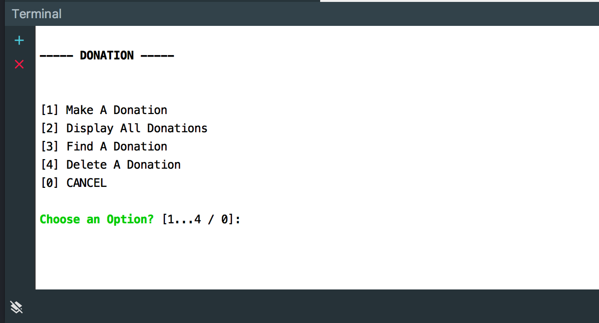
Objectives
In this Lab, you will be required to build a simple Node Console App (using WebStorm), called DonationWeb.0.1. We will use the WebStorm IDE just to get used to using the environment.
On completion of this lab you'll be able to
- create a basic Node Console App with limited CRUD functionality
- work with some Node 'packages' and use them in your app
- implement some simple JavaScript Callback functions
Step 2 - Project Setup & Menu
We're going to build a simple Node Console app using WebStorm, so (assuming you already have it installed) launch your WebStorm IDE and create a new Empty Project as follows;

Select 'Create New Project' and you should get something like this

Make sure you select 'Empty Project'
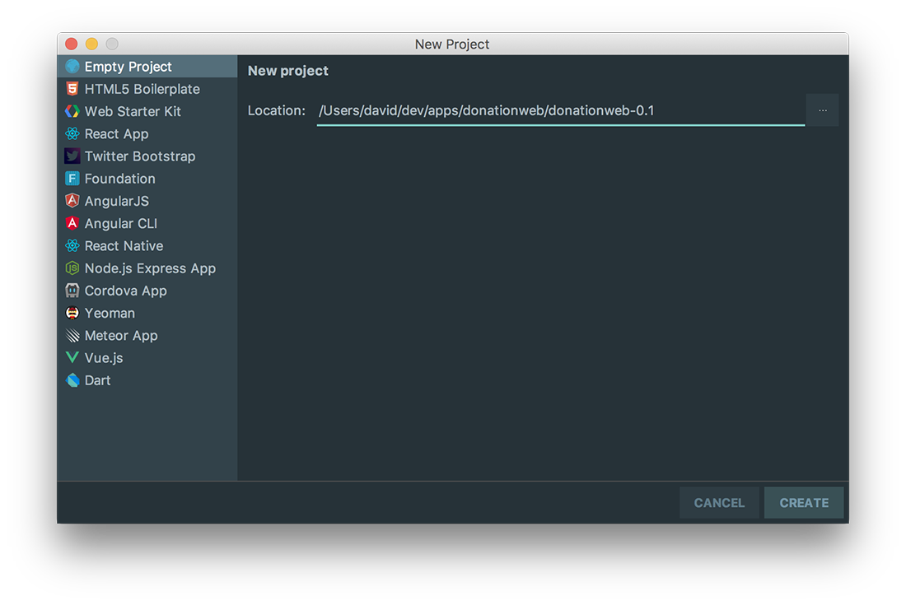
and browse to the location you want to store your project files. It's probably a good idea to store all your apps in a single folder ('donationweb' for me here) and create a new folder for our specific web app donationweb-0.1 (as above).
Now, Create a New 'File' (R-M-C (right mouse click is quickest))
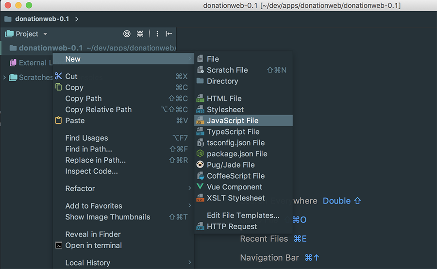
name it index and make sue you choose JavaScript as the file type
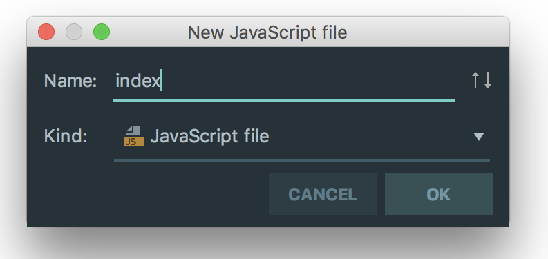
Paste in the following JavaScript into your empty index.js
const chalk = require('chalk');
const readlineSync = require('readline-sync');
function displayMenu() {
let choice;
let options = ['Make A Donation', 'Display All Donations', 'Find A Donation', 'Delete A Donation'];
console.log('\x1Bc'); // Clear the Screen
console.log(chalk.bold('----- DONATION -----'));
console.log('');
choice = readlineSync.keyInSelect(options, chalk.green.bold('Choose an Option?'));
if(choice+1 == 1)
;
else if(choice+1 == 2)
;
else if(choice+1 == 3)
;
else if(choice+1 == 4)
;
else
return process.exit(0);
}
displayMenu();Save it and select 'Run index.js' to run/launch your App by R-M-C on your index.js file
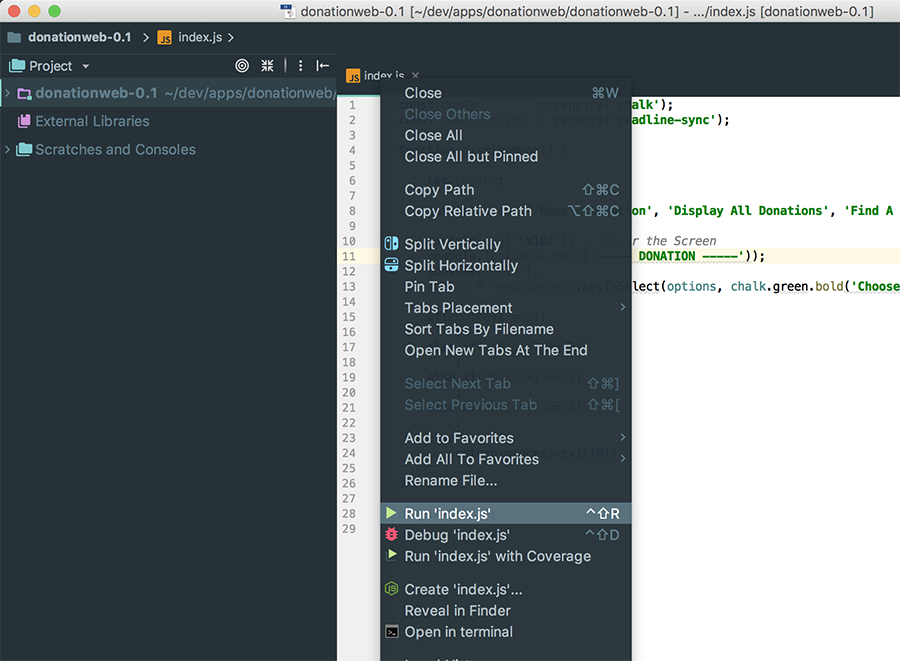
You'll get an error like the following :
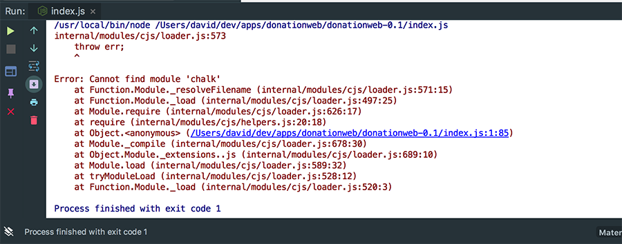
which basically means we don't have the necessary dependencies (or node modules) installed that we want to use in our App. We can fix this like so
First, in the menu, go to WebStorm->Preferences->Languages & Frameworks->Node & NPM
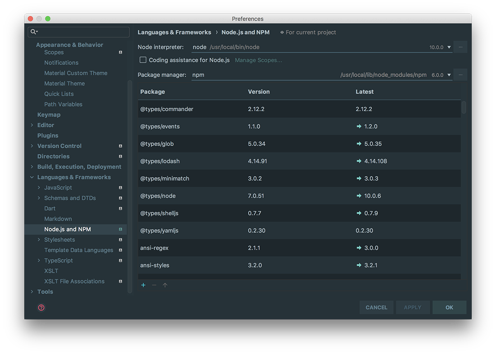
Now, click the add button
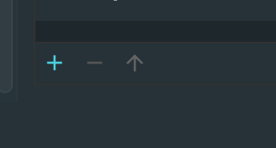
and search for 'chalk' and install that package.
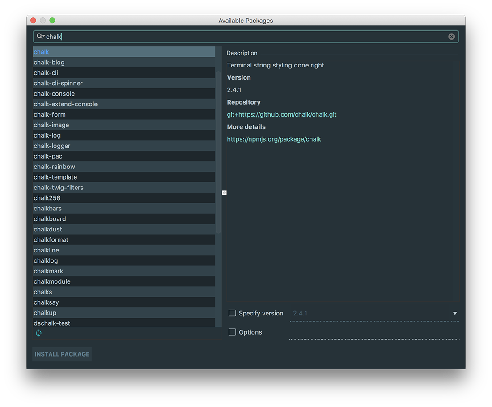

Your Project structure should now look like this - take note of the node_modules folder
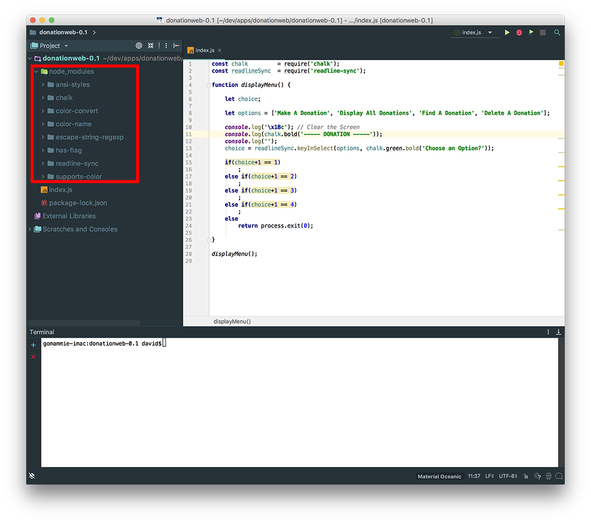
Do the same for 'readline-sync' and if everything goes to plan you should see something like this in the console window
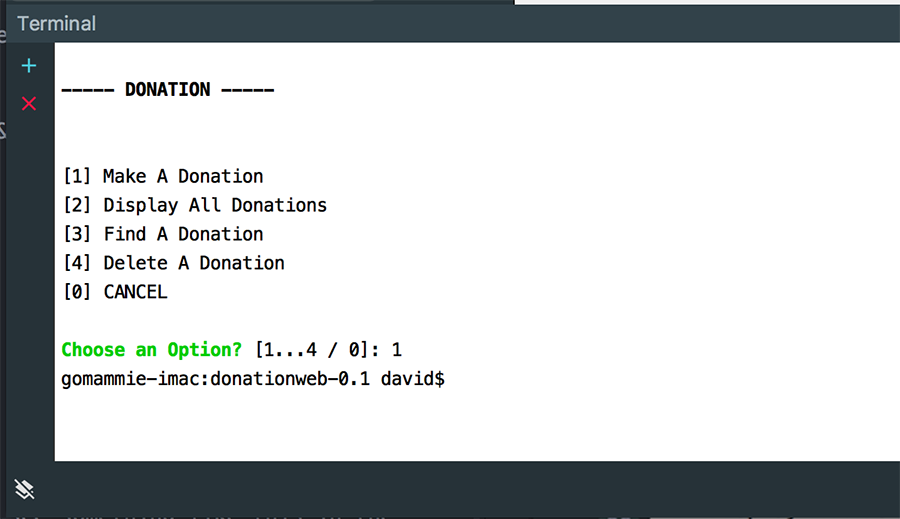
Or maybe you don't??
We need to run our app via a Terminal Window for this kind of console I/O so launch a terminal like so
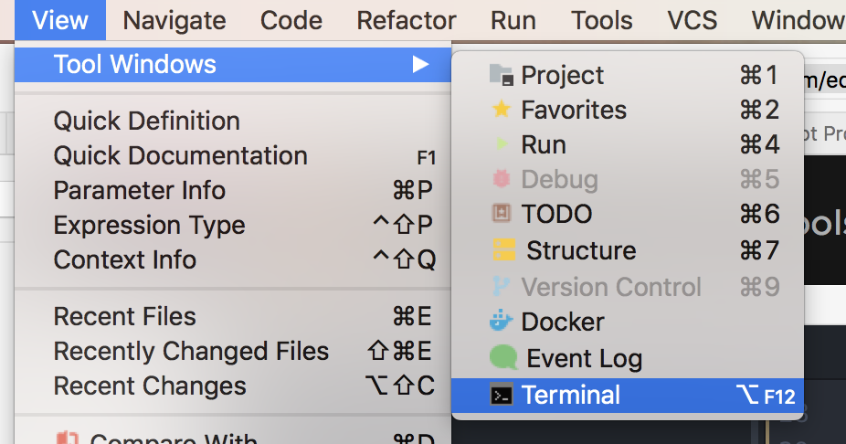
and type
node index.js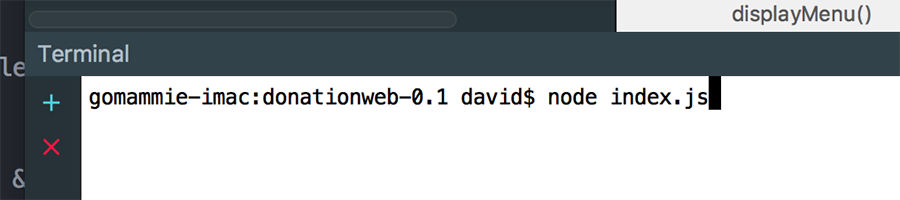
and this time you should see the menu.
It doesn't do much except display a menu, but we'll add some functionality and interactivity in the rest of the steps.
Step 3 - Displaying Donations
Before we make a start on some of the slightly more complex features of this version of our DonationWeb App, we'll implement the most straightforward option - displaying a list of donations to the user.
First thing we need is an actual list to display so add the following to the top of your index.js
let donations = [
{id: 1000000, paymenttype: 'PayPal', amount: 1600, upvotes: 1},
{id: 1000001, paymenttype: 'Direct', amount: 1100, upvotes: 4},
{id: 1000002, paymenttype: 'Visa', amount: 100, upvotes: 2}
];and we need some sort of 'looping' mechanism for our Menu so add this also and complete it
function continueYN() {
if (readlineSync.keyInYN('Do you want to Continue?'))
// 'Y' key was pressed.
//Display Menu
else
// Another key was pressed.
//Exit
}Now, using the 'chalk' module and the method above, implement a simple console menu that operates something like this:
On selecting option 1
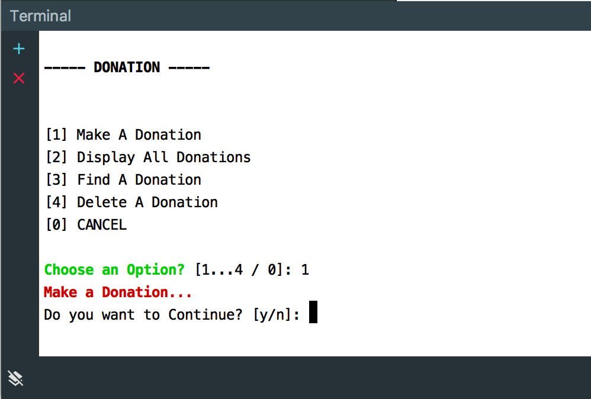
Option 2
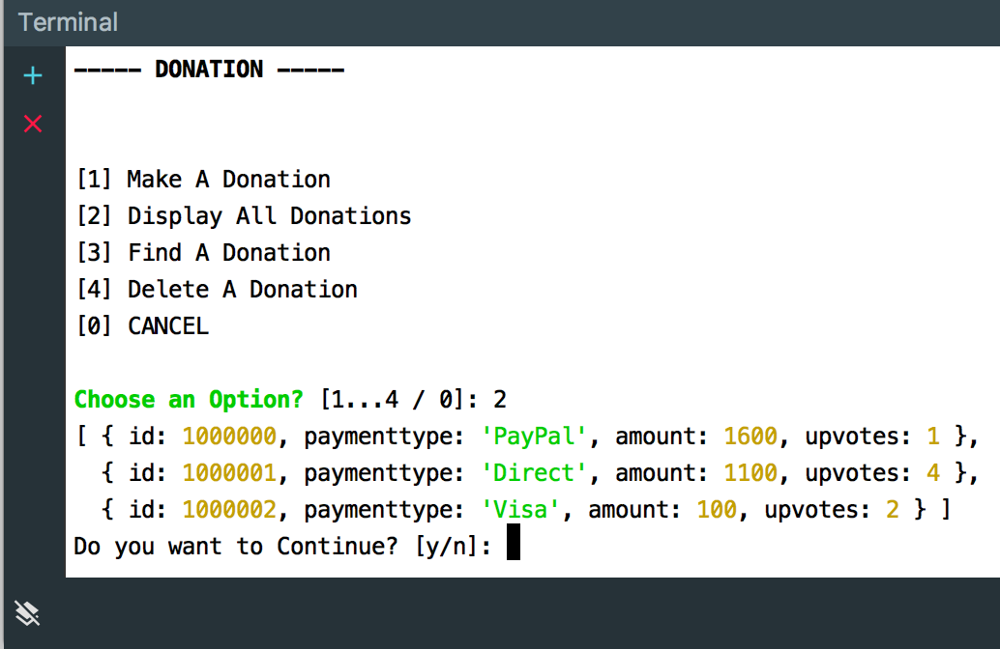
Option 3
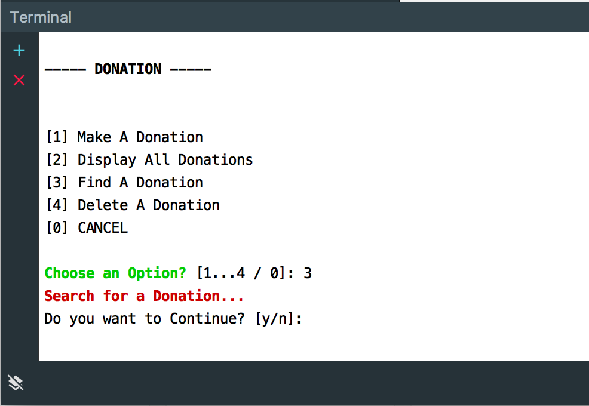
and so on....
Well Done! - You've just created, customised and 'deployed' your first Donation Node App.
(And the full source code is on the next step, if you ran into any issues)
Step 4 - Solution Source Code
const chalk = require('chalk');
const readlineSync = require('readline-sync');
let donations = [
{id: 1000000, paymenttype: 'PayPal', amount: 1600, upvotes: 1},
{id: 1000001, paymenttype: 'Direct', amount: 1100, upvotes: 4},
{id: 1000002, paymenttype: 'Visa', amount: 100, upvotes: 2}
];
function continueYN() {
if (readlineSync.keyInYN('Do you want to Continue?'))
// 'Y' key was pressed.
displayMenu();
else
// Another key was pressed.
process.exit(0);
}
function displayMenu() {
let choice;
let options = ['Make A Donation', 'Display All Donations', 'Find A Donation', 'Delete A Donation'];
console.log('\x1Bc'); // Clear the Screen
console.log(chalk.bold('----- DONATION -----'));
console.log('');
choice = readlineSync.keyInSelect(options, chalk.green.bold('Choose an Option?'));
if(choice+1 == 1)
console.log(chalk.red.bold('Make a Donation...'));
else if(choice+1 == 2)
console.log(donations);
else if(choice+1 == 3)
console.log(chalk.red.bold('Search for a Donation...'));
else if(choice+1 == 4)
console.log(chalk.red.bold('Delete a Donation...'));
else
return process.exit(0);
continueYN();
}
displayMenu();